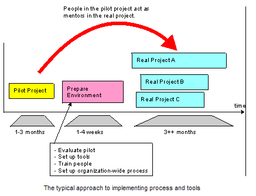
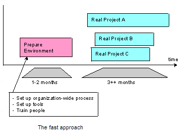
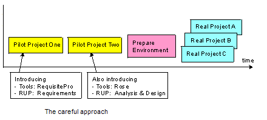

There are several approaches to implementing process and tool improvements in an organization. The strategy you
choose depends on factors such as:
-
level of risk associated with the changes
-
urgency of needed improvement
-
number of planned changes
-
organizational capacity for change
A typical approach
In the typical approach, illustrated in the figure below, you implement the process and tools in a pilot project,
as an initial step. After the pilot project, evaluate the use of process and tools, then prepare the process and tools
to be launched to a wider audience. This approach is especially useful when the organization is skeptical about process
or tools change.
The typical approach is often the most effective way to introduce the process and tools.

Advantages of the typical approach:
-
Rapid application of process and tools
-
Process can be fine-tuned
-
Other projects can be mentored by the pilot team
-
Process definitions and tools configurations are based on actual experience
Disadvantages of the typical approach
-
Process is initially scoped to one project
-
Pilot project delivery may be delayed
-
May be difficult to maintain momentum after initial pilot
A fast approach
The fast approach, illustrated in the following figure, uses the new process and tools directly in real projects
without verifying that they work in a pilot project. This approach introduces a greater risk of failure, but there can
be good reasons for taking those risks. For example, if the current process is very similar to the new
process and if the tools are already used in the organization, it may be relatively easy and low-risk to implement
the new process and tools.
Another time to use the fast approach is when the organization is suffering from such severe problems that any change
is perceived as an improvement. This assumes that the potential for improvement is greater than the problems the
organization will inevitably encounter.

Advantages of the fast approach:
-
Projects can be started up very quickly
-
Learning curve is small if already using similar process or tools
Disadvantages of the fast approach:
-
Process and tools are unproven within the organization
-
Risk of "Ivory Tower" syndrome
-
Tends to produce an unwieldy process
A careful approach
A more careful approach is to run more than one pilot project before a real project starts using the new process and
tools. Use the careful approach when the risks are high and when there are many new factors. You may want to use the
process and tools on several projects before you launch them to the entire organization.
Consider using the careful approach if one, or more, of the following is true:
-
There are many changes in process and tools for the people to learn.
-
There are many risks.
-
The capacity for change is low.

Advantages of the careful approach:
-
Shorter time required for environment development
-
Organization has time to adapt to change
-
Reduced complexity on individual projects
-
Greatest probability of success (if quick wins are achieved)
Disadvantages of the careful approach:
-
Projects start up later
-
Process is scoped to one domain/ approach
-
Can take too long to prove Return on Investment (ROI)
-
Difficult to maintain momentum
A distributed approach
The distributed approach means you make the process and tool improvements available to the entire development
organization. Each software development project is then free to decide how to use the process. There is no coordination
or reuse between software development projects. This approach is useful when the organization wishes to test process
and tools under different scenarios (e.g. mainframe versus Java, or in-house versus outsourced projects).
The distributed approach can still give value to the organization in these ways:
-
The projects get a common vocabulary.
-
People get used to the defined process as a common process.
-
The distributed approach may be the first step towards really making use of process and tools.
Advantages of the distributed approach:
-
Process can be applied to different domains
-
More mentors available after early adopters
-
Reduced individual project complexity
-
Risk of failure spread among projects
Disadvantages of the distributed approach:
-
More mentoring up front
-
Might have to resolve process conflicts
-
More initial management complexity
-
Difficult to maintain momentum
|